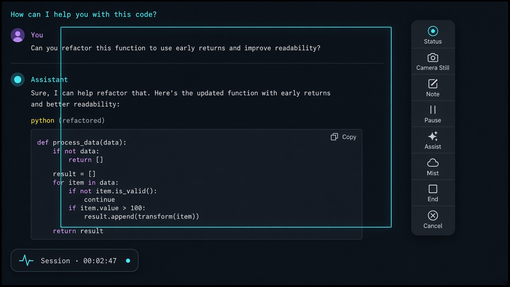
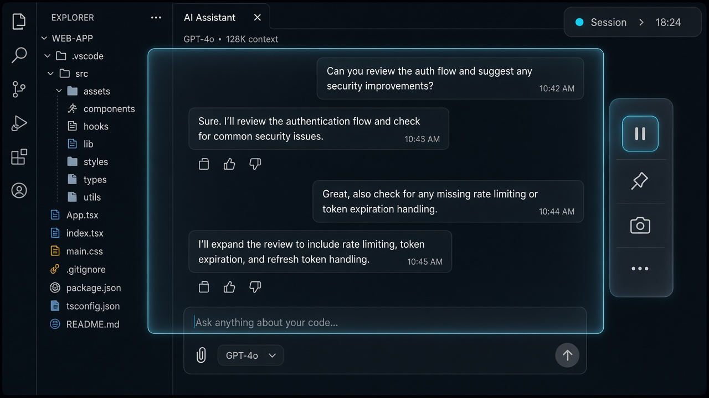
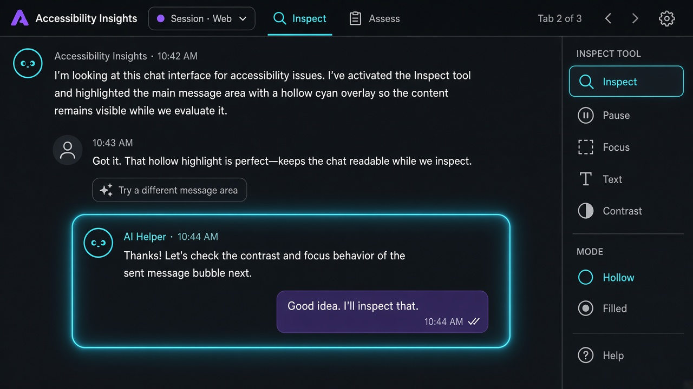
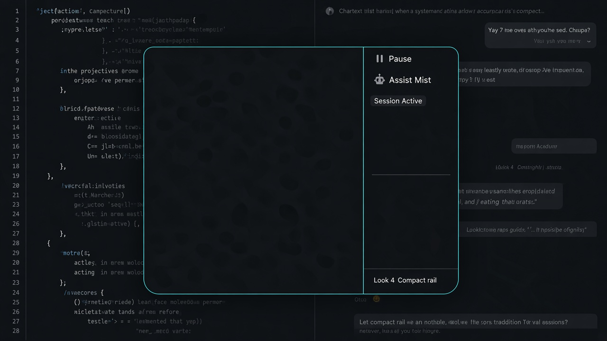
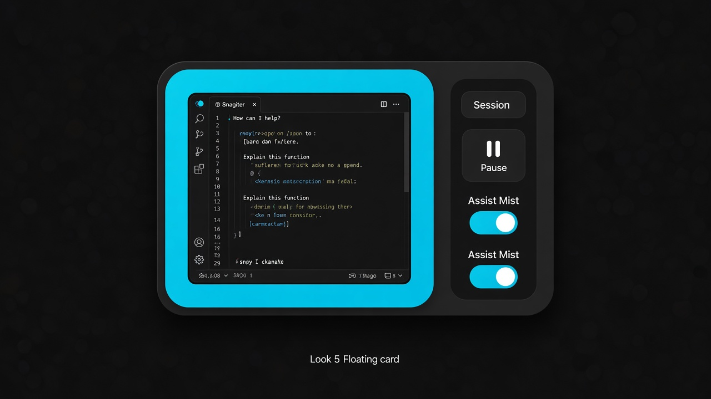
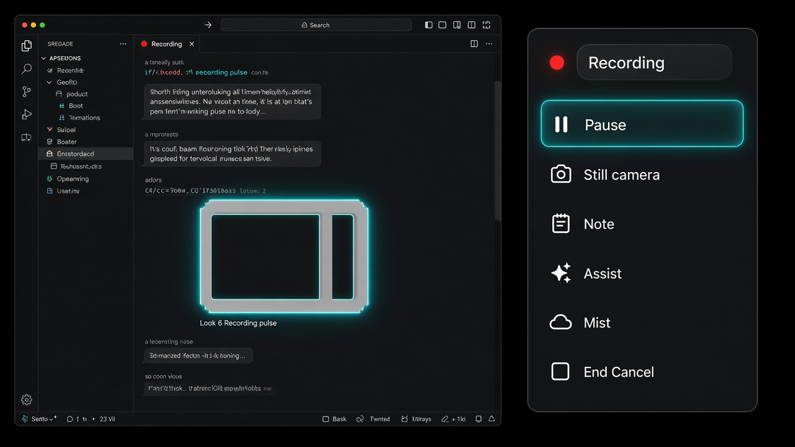

G+tray — look variants (pick 1–6)
Structure already Accepted. Reply in chat with a number. Hollow hole + right icon tray; Pause own icon; Assist/Mist on tray.
1 — Cyan hairline · thin stroke, flat dark rail

2 — Frosted glass · soft blur tray, Game Bar materials

3 — Inspect glow · stronger cyan stroke + outer glow

4 — Compact rail · denser VS Code–tight chrome

5 — Floating card · elevated shell + inset wells

6 — Recording pulse · rec state, Pause highlighted
